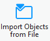
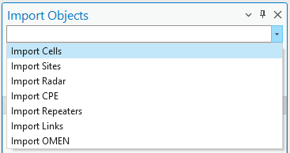
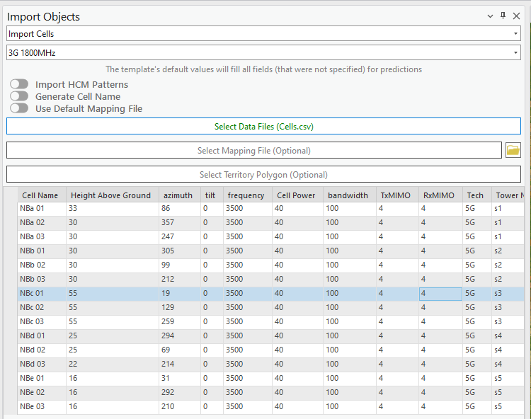
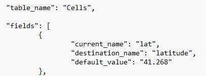
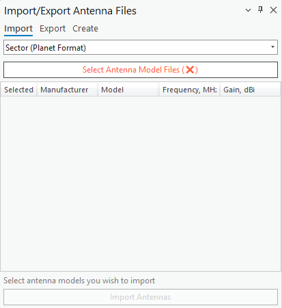
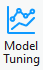
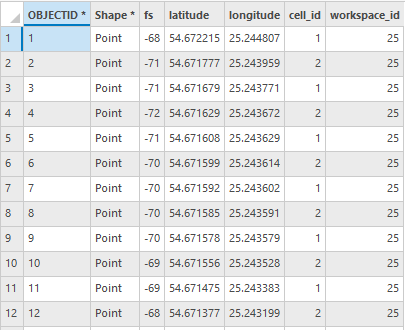
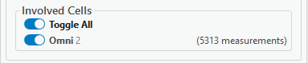
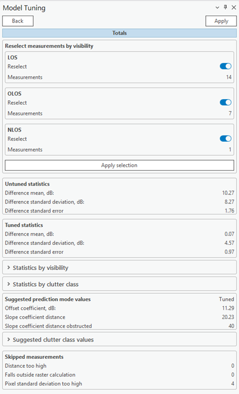
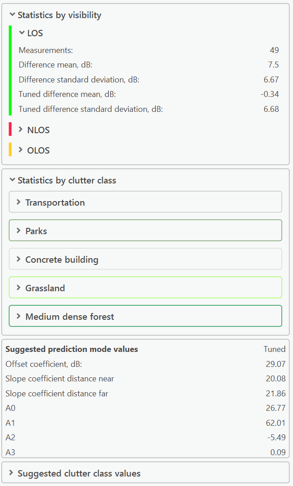

Data Management — Import / Export
Note: "Model Tuning" at the end of this page is an RCP-only feature.
7.9 Import Objects
The Import Objects feature further enhances efficiency by allowing users to bring in network objects from multiple external documents without manually creating them. This capability is invaluable when dealing with


extensive or complex datasets. Cellular Expert for ArcGIS Pro supports the import of three widely used file formats: .xls, .xlsx, and .csv. Additionally, for mapping files, it supports the .json format. Key benefits of the Import Objects feature include: • Time-Saving: Instead of manually entering or recreating network objects, users can quickly import data from existing documents, significantly reducing setup time. • Data Consistency: Importing ensures that all network objects maintain consistency with the original data source, minimizing discrepancies and errors. • Support for Multiple Formats: With support for commonly used file formats like .xls, .xlsx, and .csv, the tool is versatile and can integrate seamlessly with various data workflows. Click the button to open the Import Objects dialogue. Expand Import drop-down menu and select the object, which should be imported. The dialog will be filled with the options to define data and mapping files.7.9.1 Import Cells
The option enables possibility to import Cells in the Cellular Expert workspace. It has additional parameters
 compared to other import options.
Template
Take necessary parameters from the template during the import. Template values are taken if some
parameters are missing in text file and mapping file.
Import HCM Patterns
Antenna patterns would be created and imported based on specific antenna name values provided in HCM
agreement. HCM antenna pattern import requires the data files to have an antenna_type field.
Generate Cell Name
Generate a cell name for all selected cells based on these parameters in this exact order: "longitude",
"latitude", "height", "azimuth", "power", "antenna_gain", and "frequency". If any of the fields are missing,
that field will be skipped.
Use Default Mapping File
A default mapping file will be applied to the imported data.
Select Data Files
Opens a dialogue window where the user can select the files that define the network objects to be imported.
The supported formats: .xls, .xlsx,.csv, and tables from .sde connection. Upon successful selection, the
button will light up green.
compared to other import options.
Template
Take necessary parameters from the template during the import. Template values are taken if some
parameters are missing in text file and mapping file.
Import HCM Patterns
Antenna patterns would be created and imported based on specific antenna name values provided in HCM
agreement. HCM antenna pattern import requires the data files to have an antenna_type field.
Generate Cell Name
Generate a cell name for all selected cells based on these parameters in this exact order: "longitude",
"latitude", "height", "azimuth", "power", "antenna_gain", and "frequency". If any of the fields are missing,
that field will be skipped.
Use Default Mapping File
A default mapping file will be applied to the imported data.
Select Data Files
Opens a dialogue window where the user can select the files that define the network objects to be imported.
The supported formats: .xls, .xlsx,.csv, and tables from .sde connection. Upon successful selection, the
button will light up green.
Select Mapping File (Optional) Opens a dialogue window where the user can select a file that defines the data to be imported and the conditions under which said data is processed. The supported format is .json. Upon successful selection,

the button will light up green. More on mapping files are below. Steps.-
Click on Select Data Files, and define your text file. The file will be loaded into the dialog.
-
If your data structure is different compared to Cellular Expert database, then Mapping file should be used to map your data structure and Cellular Expert workspace, Cells layer structure. More information about mapping file is available below.
-
Click on Import Cells button to start importing procedure. Sites can be imported together with Cells, if: • The mapping file is not used, and text file has site_id field, which contains information about Site name. It must be text data. • The mapping file is used, then the data should be mapped with site_id field. It must be text data. 7.9.1.1 Mapping file The data in the import files may have names, values, and units that do not match the data in the Cellular

 Expert database. To resolve such issues an additional Mapping file should be imported in which these data
conflicts ought to be addressed.
The empty mapping file can be found in the project’s workspace catalog, SystemFiles folder.
The mapping files are not necessary if the import file data corresponds to the Cellular Expert database
data, otherwise mapping files are a must for a successful import.
Values that are not mentioned in the mapping file will not be affected.
Expert database. To resolve such issues an additional Mapping file should be imported in which these data
conflicts ought to be addressed.
The empty mapping file can be found in the project’s workspace catalog, SystemFiles folder.
The mapping files are not necessary if the import file data corresponds to the Cellular Expert database
data, otherwise mapping files are a must for a successful import.
Values that are not mentioned in the mapping file will not be affected.
The structure of a mapping file: “table_name” - defines which network object’s values are being mapped. “current_name” - the name of the value that is written in the data file. In this example “lat” is a column name in the data file and will be changed to “latitude” when the mapping file is applied, and objects are imported. “destination_name” - the proper name of the property (table column name) in the Cellular Expert database. This property will be checked when the mapping file is imported. “default_value” – value that will be used when an object in the data file has no value for a particular property. In this example, if “latitude” is not set, then it will by default be assigned the value of 41.258.

 Leaving the default to empty quotation marks (“”) means that no default value will be applied.
Leaving the default to empty quotation marks (“”) means that no default value will be applied.
7.9.2 Import Sites, Radar, CPE, Sirens, or Repeaters
Other network objects can be imported to Cellular Expert workspace. The dialog contains information about. Template Take necessary parameters from the template during the import. Template values are taken if some parameters are missing in text file and mapping file. Select Data Files Opens a dialogue window where the user can select the files that define the network objects to be imported. The supported formats: .xls, .xlsx,.csv, and tables from .sde connection. Upon successful selection, the button will light up green. Select Mapping File (Optional) Opens a dialogue window where the user can select a file that defines the data to be imported and the conditions under which said data is processed. The supported format is .json. Upon successful selection, the button will light up green.
7.10 Import/Export Antenna Files
7.10.1 Import Antennas
Click the toolbar button and select Import to import antenna patterns. The command opens a dialogue window where the user can select the antenna pattern files to be imported into the Cellular Expert

database. Select the antenna type in the dropdown list and proceed. Select Files This button opens a dialogue in which you can select one or more antenna pattern files to be imported. The supported type formats are Planet, Andrew, and NSMA. Import Antennas Imports the selected Antenna pattern files to the Cellular Expert database. Import Antennas Refreshes the data table if changes have been made to it.7.10.2 Export Antennas
Exports selected antennas to a desired format. Click on the button and select Export to export antenna patterns. Select the Export path on your local hard drive, check the desired antennas, and click the Export button.
Export Path The destination folder on your local hard drive to which the selected antennas will be exported. Can be entered manually or by clicking the Open button and selecting it in the dialog. After defining the antenna format, all available antennas of that format will be displayed in the Antennas table. The supported type formats are Planet, Andrew, and NSMA. Export Antennas Exports the chosen antennas to the selected destination folder.
7.10.3 Create Antennas
Create new antennas based on input parameters. Click on the button and select Create to create antenna patterns. Various parameters of the antenna can be entered, as well as horizontal and vertical beamwidth values or ranges. For the selected horizontal and vertical values or ranges, the horizontal and vertical attenuations are set to 0, while all other
 attenuations are set to 1000. Based on the horizontal and vertical beamwidths, the horizontal and vertical
antenna patterns are displayed.
attenuations are set to 1000. Based on the horizontal and vertical beamwidths, the horizontal and vertical
antenna patterns are displayed.
| Parameter | Description |
|---|---|
| Manufacturer | Antenna manufacturer (company or entity). |
| Model | Antenna identification or name. |
| Frequency | Antenna frequency value in MHz. |
| Gain | Antenna gain value in dBi. |
| Horizontal beamwidth | Antenna’s horizontal beamwidth value or range in degrees. By default, the value is 60. |
| Vertical beamwidth | Antenna’s vertical beamwidth value or range in degrees. By default, the value is 15. |
| Create Antenna | Creates the antenna pattern in the database. |
7.11 Model Tuning
Click the button to open the Model Tuning dialogue. Model Tuning is used to optimize prediction model parameters based on drive test points. These measurements must be placed on a custom feature class and bound to a cell by its cell ID. The custom drive test feature layer (class) must have these fields: • Field Strength (fs in the class table) • Latitude • Longitude • Cell_id (a field which binds the drive test to a cell network object) Upon the creation of the feature class, you should select the drive test layer. It is necessary to have cells


on the map for the calculations to work. Their OBJECTID should correspond to the cell_id present in the feature class’s table. Select a Drive Test Layer and the following properties should become visible:| Parameter | Description |
|---|---|
| Drive Test Layer | The feature layer (class) that will be used to tune prediction model parameters. |
| Cell Identification | Cell name field name in drive test layer. The tool uses ObjectID value in Cells network objects to map drive test points. |
| Field Strength | Field Strength field name in drive test layer. |
| Resolution | Cell size for model tuning. |
| Prediction Model | Prediction model name and type which will be used to tune its parameters. |
| Selected | The count of all measurement points. |
Involved Cells Information about the cell is given in this manner: cell name, cell ID, amount of measurements assigned to

the cell. At the moment, measuring for a single cell is supported. Toggle All Include/Exclude all selected cells. Toggle Button By the Cell Include/exclude certain cells from the test calculations. Select the Cells with which you want to do the drive test by clicking the checkboxes and pressing the Run Calculation button Calculation results will appear in the dockpane, which contains the general, prediction model and clutter values of the calculations.Measurement points can be reselected by visibility: LOS (line of sight), OLOS (obstructed line of sight), or

NLOS (no line of sight). This allows for easy rerun of the tool with only relevant points to perform further tuning of the model. Untuned and Tuned statistics The comparison between the untuned and tuned prediction models is presented by highlighting the differences in their mean values, standard deviations, and standard errors. • Difference Mean during model tuning measures how the average prediction accuracy or performance improves after optimizing model parameters compared to the default settings. For example, tuning might reduce the average prediction error, leading to more accurate coverage or signal estimations. • Standard Deviation reflects the variability in prediction performance. Comparing standard deviations between untuned and tuned models shows whether tuning makes predictions more consistent and reliable. For example, lower standard deviation after tuning indicates the model's predictions are less scattered and more stable. • Standard Error during model tuning quantifies the precision of the mean prediction. A lower standard error in the tuned model suggests that the average prediction is more reliable and less influenced by sample variability, indicating improved model stability and confidence in its performance.Statistiscs by visibility and by clutter class are also available. Untuned and tuned difference points are also

now visualized on the map as part of the model tuning calculation result in separate layers. Suggested prediction model values Model coefficients that are recommended to be changed. • Offset coefficient – represents the offset in decibels added to the path loss grid. The default value is 32 dB. • Slope coefficient distance – defines the slope based on the distance between the cell and the receiver location, with a default value of 20. • Slope coefficient distance obstructed – represents the slope based on the obstructed distance between the cell and the receiver location. The default value is 40. | Parameter | Description | |---|---| | Suggested clutter class values | Recommended clutter loss values | | Apply | Edit the tuned prediction model with suggested model and clutter class values. | | Back | Get back to the main Model Tuning calculation window. |